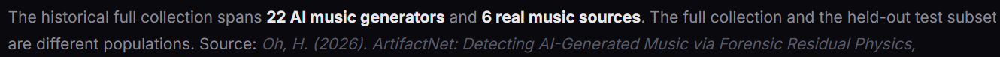

We consider the use of automated AI detectors as arbiters of creative provenance to be fundamentally misguided.
Such detectors may have a legitimate role as investigative signals. They do not establish provenance. That does not mean an automated forecast can never be correct. It means the forecast itself is not a reliable basis for establishing or publicly asserting the provenance of a creative work. Particular production styles, processing techniques or other characteristics may resemble patterns a classifier associates with AI, and legitimate human-made work can consequently be flagged as AI-generated.
We have seen this problem directly with our own music. We submitted one of our songs—a recording written, performed, recorded and produced by people—to two automated AI-music detectors. ANYANO classified the song overall as non-AI, while ArtifactNet classified the exact same recording as “AI GENERATED” with a reported 100% probability of AI. The recording did not somehow change its provenance between those two analyses: it was our human-made song in both cases. Two systems reached radically different conclusions, and maximum model confidence did not turn the incorrect conclusion into a fact.
no detector output, including this one, is evidence of authorship.
Why did it flag my own song as AI?
Heavy spectral processing (aggressive limiting, AI-era codec resampling, extreme stereo widening) can mimic AI residuals.
Even if such tools provide statistics of confidence, they never are confident over specific artistic choices. ArtifactNet provides a statistic with absolutely no clarity what songs and how many songs were tested. If they accumulate too from user inputs there even may be a hidden increase of false positives, this though applicable if they do that which isn't provided as information in the first place. This makes those tools a fun thing to play with or maybe even investigate but absolutely no tool to judge purely on a result. The bad clarity of how their reports were made doesn't exactly build trust neither.
Note on Pat's end: I find it especially funny they want money for providing such tools that factually states fuck all.
Using such systems as the foundation of an enforcement system intended to prevent AI misuse therefore creates an obvious failure mode: genuine misuse may need to be addressed, while legitimate human artists can simultaneously be accused, restricted, demonetized or forced to defend themselves because their work happens to resemble patterns a classifier associates with AI.
A system intended to protect human creators should not do so by treating human creators as acceptable false positives. Human artists should not be publicly insulted by an algorithm – and by the corporation choosing to publish its output – without actual evidence that the algorithm's claim is true.
If an automated detector raises a concern, investigate it. Do not turn a forecast into a fact, an accusation, or a punishment.
ArtifactNet states that it counts as evidence for review. Should every artist now be insulted to prove their authorship just because the algorithms thinks it may have or has similarity in what AI produces even though they were trained by human music and specific master, mix and editing techniques simply leave such artifacts true. This is no evidence.
ArtifactNet
This is no evidence. You can take it as hint but hints can be deliberately wrong.
Calling the algorithm's hint evidence would make everybody collecting false weather forecasts and appear in the court house. Is now a forecast let into court house being part of the proof as evidence?

And then the training data. I'm sorry but thanks for actually providing it. 6 real music sources to compare against? This obviously leaves huge genre gaps and specific styles especially for rock music and music that already contains electronic stuff that may be fitted onto a grid via Cubase or sometimes even with spectral editing and hard/harsh processing and editing techniques that are used to make a sound hit harder. In other words those tools can't really tell if a song is AI generated. They may tell whether they found patterns they associate with AI but those patterns don't exclusively exist in AI generated songs hence they can't tell whether a song was generated. Associations can help but don't determine a thing. How often do we misunderstand each other because we associated differently and talked past each other?
Such tools may even falsely advertise their software misleadingly (I've seen that often) or make false claims in their ads like "Find out if that song was generated by AI" or similar to gain more users. Those ads aren't restricted to normal ads. age descriptions etc. are equally involved which misleads the user. But this ain't a given to all services and I explicitly exclude ArtifactNet and ANYANO from this claim. Additionally this may change with time and regulations, meaning if you're reading this, some pages may have changed that already.
The two sites, ANYANO and ArtrifactNet, I referenced both have written it fatly at the top that there is uncertainty. ANYANO stated it's not evidence, like shown above, while ArtifactNet shows the following:
"A score is a signal to review, not proof of authorship."
"Detection is an analytical signal, not proof of authorship."
Though I would disagree partly on the wording of ArtifactNet as it later states that it's evidence which ANYANO correctly states: it is not, no matter how good the model is. But that's high-level word-picking for a nuance and I'm grateful they made that statement at all. I think that they put it into the heading makes it at least more fair, even though there will be humans only believing such an algorithm which obviously isn't their fault or another similar/exchangeable word for fault. Problem is that people from labels etc. do believe such algorithms blindly. We have questioned the release process of some distributors and the result was that they either follow the algorithms hint blindly instantly denying or questioning the artist and giving themselves more time actually release the tracks provided by the artist. This can hurt artists and it can hit financially. Still there is the issue of fraud that they're trying to address. The problem with the algorithmic tribunals is that people committing fraud know there ways and can make AI generated songs slip through and often quite easily while smaller artists often get the load of getting their work questioned and stalling their income. That's why I'd say that algorithms used in this way aren't quite the solution. They surely may help somehow but not in instantly denying if a song gets flagged nor in unnecessarily stalling the release just because the algorithm said: "May be AI" is this may have financial implications and therefore is a penalty which should be considered. This is pure experience and may change over time (hopefully).
ArtifactNet provides a precise false-positive rate of 1.3%, yet I could not find sufficient experimental documentation to independently reproduce or verify that number. Neither the detector page nor the papers linked there appear to provide the complete set of tested songs, the individual test results, or the calculations and aggregation method used to arrive at that result.
Presenting such a precise statistic without providing the experimental basis necessary to evaluate it is, in my opinion, highly misleading. To an ordinary visitor, “1.3% false-positive rate” can easily appear to be a scientifically established measure of the detector's reliability, while the publicly available information does not allow the reader to verify how that number was obtained or what population it actually describes. I find presenting performance statistics in this manner unacceptable, particularly when users may rely on those statistics when judging whether another person's work is AI-generated.
Even if the reported 1.3% is accepted as accurate for their particular test, that creates a separate problem: how representative was the test material? Six real-music sources leave substantial gaps in genre, production style, processing techniques, and other characteristics of human-made music. A false-positive rate measured on such material cannot simply be assumed to represent human music as a whole.
Having previously studied physics and now studying mathematics, the lack of that information simply hit a nerve.
Additionally, our own experiments with ArtifactNet on human-made songs produced false positives in both of the two songs we tested. Some elements of the mixing and mastering workflow used on those recordings remain in our current workflow, and some detection algorithms still flag our material. This suggests that characteristics of our production process may contribute to these classifications. However, we have not isolated the responsible variables, so we cannot establish what specifically causes the detectors to react. Our sample consisted of only two songs, so the resulting 100% false-positive rate should not be interpreted as a meaningful estimate of the detector's general false-positive rate.
We also tested approximately four to six songs of us using ANYANO which had a false-positive rate of about 50%. But that rate should not be interpreted as a meaningful estimate on ANYANO either because of a similarly small sample size.
I don't think the current ways of how it's done is the right way.
But sometimes you have to turn wrongly to know where's right.
This article is not made to make any tool of that type or distributor etc. look bad. It simply focuses on the tool's limitations and on the impact it may have, when falsely used.
A knife is a tool. How it is used is solely up to the person or entity utilizing it.
One may cook with it. Another may commit murder.
Text by Pat.